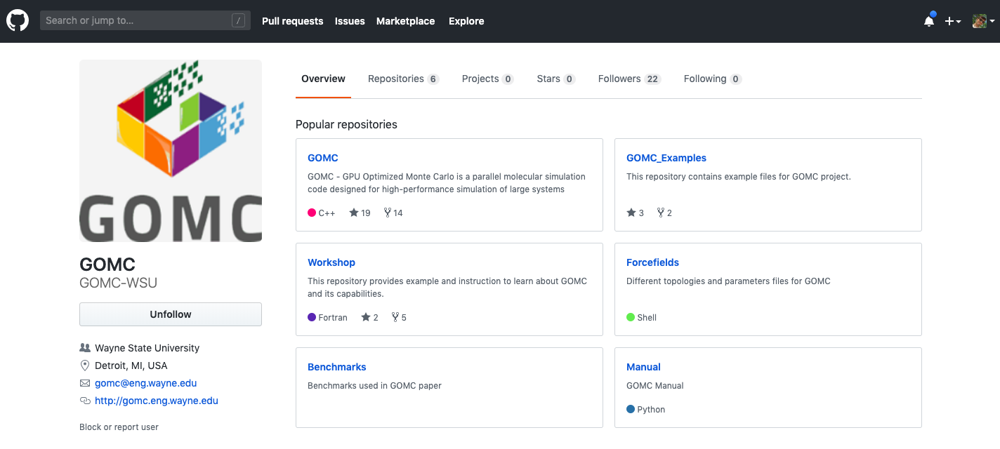
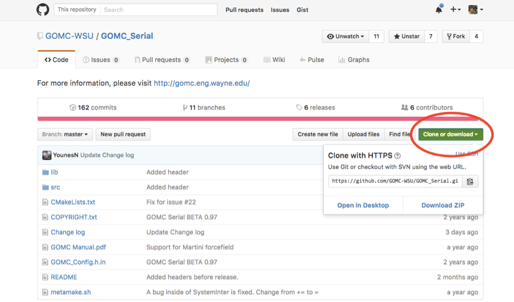
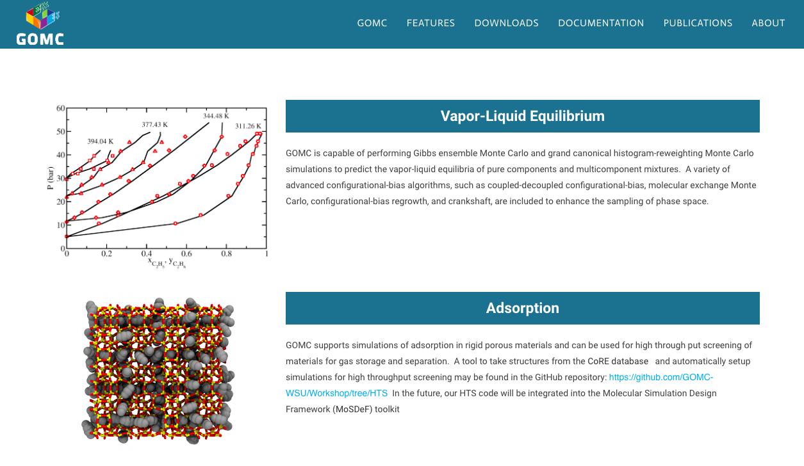

How to get the software¶
The CPU and GPU code are merged together under GOMC project. Currently, version control is handled through the GitHub repository. The latest GOMC release, Example files, and User Manual can be downloaded from GOMC website or GitHub repository.
GitHub¶
The posted builds in Master branch are “frozen” versions of the code that have been validated for a number of systems and ensembles. Other branches are created as a means of implementing new features. The latest updated code builds, manual, example files, and other resources can be obtained via the following GitHub repository:
GOMC and Examples repository can be found under the main page. Under GOMC repository, the code and manual can be found. Each repository can be downloaded by clicking on the Clone or download tab.
To clone the GOMC using git, execute the following command in your terminal:
$ git clone https://github.com/GOMC-WSU/GOMC.git
To clone the GOMC Example files using git, execute the following command in your terminal:
$ git clone https://github.com/GOMC-WSU/GOMC_Examples.git
Website¶
To access the GOMC website, please click on the following link: GOMC Website
The code can be found under the download tab, below and to the right of the logo. When new betas (or release builds) are announced, they will replace the prior code under the downloads tab. An announcement will be posted on the front page to notify users.
GOMC is distributed as a compressed folder, containing the source and build system. To compile the code after downloading it, the first step is to extract the compressed build folder.
In Linux, the GPU and CPU codes are compressed using gzip and tar (*.tar.gz). To extract, simply move to the desire folder and type in the command line:
$ tar -xzvf <file name>.tar.gz